MigMix（ミグミックス）フォント
MigMixフォントは、以下の特徴があります。
- M+フォントをなにも改変せず、そのまま取り入れた
- ただしボールド体の扱いが異なる。下の項目で説明します
- IPAゴシックを合成して、漢字をJIS第1水準～第4水準まで持つ
太字（ボールド体）の扱い
MigMix 1P ⇔ 2P ってどこが違うの？
ダウンロード
MigMix 1P
migmix-1p-20200307.zip (約4MB) のダウンロード
『伝わるデザイン｜研究発表のユニバーサルデザイン』で推薦されました。
MigMix 2P
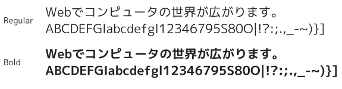
migmix-2p-20231123.zip (約4MB) のダウンロード
上の MigMix 1Pとの違いは、全角ひらがなカタカナと英数字のデザイン。
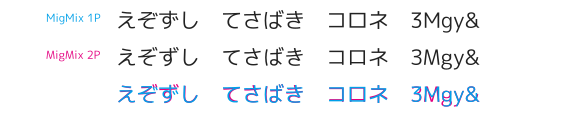
MigMix 1M
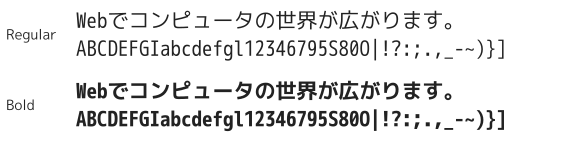
migmix-1m-20200307.zip (約4MB) のダウンロード
フォント名の「M」は monospace (モノスペース、等幅）の略です。
MigMix 2M
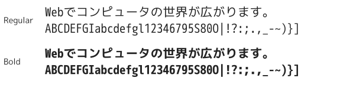
migmix-2m-20200307.zip (約4MB) のダウンロード
半角ゼロがドットゼロなど、字形がMigMix 1Mと違います。
バージョンごとの変更点は変更履歴をご覧ください。
スクリーンショット
- 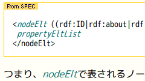
フォント： MigMix 1P, MigMix 2M
環境： Linux (Ubuntu 10.10)
元ページ：The Web KANZAKI - 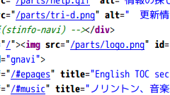
フォント： MigMix 1M
環境： Windows XP ＋ gdi++
元ページ：The Web KANZAKIのソース
{kind=link}
{kind=link}
太字（ボールド体）の扱い
M+フォントは、ウェイト（太さ）が7つ用意されています。
MigMixフォントは、そのうちの2つを使用できます。
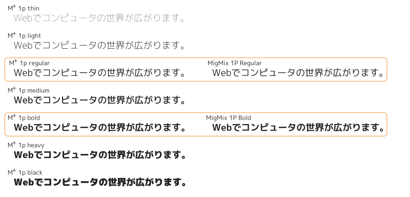
こうしてみると、M+フォントのほうがウェイトの自由度が高くみえますが、実はそうでもありません。
M+フォントの制限 1
Windows環境では、ウェイトごとに別々のフォントのように扱われます。
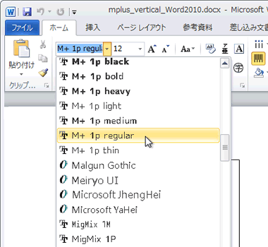
上の画像はWindows 7上のWord 2010です。
「M+ 1p」は7つの別々のフォントとして扱われていますね。
「MigMix 1P」は1つのフォント扱いです。
M+フォントの制限 2
その結果、M+フォントは、太字（ボールド体）に自動生成（擬似ボールド）が使われます。
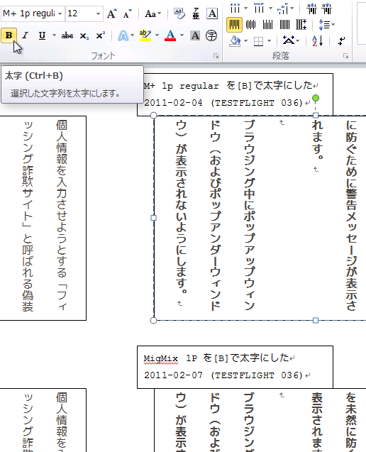
「M+ 1p regular」を Wordの機能で太字にしても「M+ 1p bold」は使われません。
「MigMix 1P」は「MigMix 1P bold」が使われます。画面上でも違いがわかります。
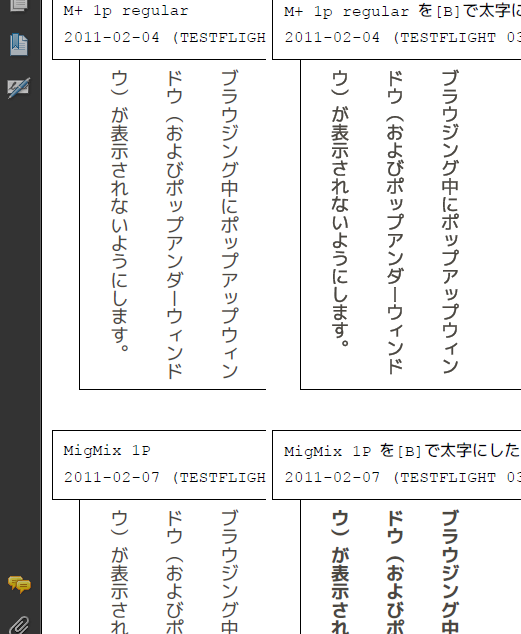
WordからPDF出力しました。
自動生成（擬似ボールド）した文字は、印刷やPDF化したとき太さがたりません。
MigMixはインストールされたボールド体を使うので違いがはっきりわかります。
オススメなのは、普段はMigMixを使い、極太ボールド体が必要なプレゼン資料を作るときなどに、M+フォントの heavyなどのウェイトを組みあわせて使うことです。
MigMixは名前こそ M+と違いますが、字形はまったくM+フォントと同じなので、この2つのフォントは混ぜても違和感なく使えます。
MigMix 1P ⇔ 2P ってどこが違うの？
MigMix 1Pと2Pで違うのは字形です。漢字は同じですが、ひらがな・カタカナ・英数字が異なります。
全角ひらがな を比較
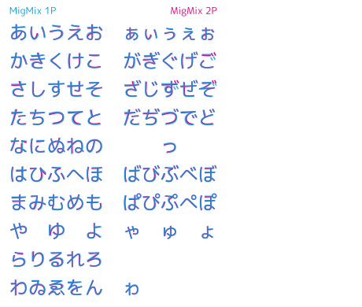
すべての文字が少しずつ異なりますね。2Pのほうを微妙に小さめに作ってあるようです。
全角カタカナ 比較
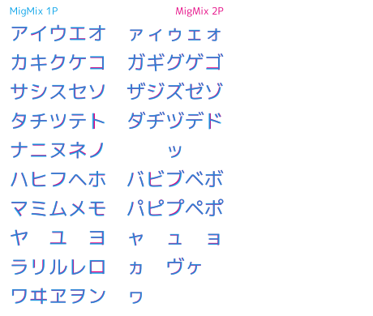
微妙に異なります。
フォント生成スクリプトを見ると、2Pのほうは漢字を98%に縮小しています。カタカナも2Pは微妙に小さめです。
半角英数字 比較
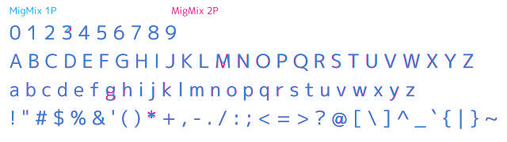
半角英数字は、1Pと2Pでかなり同じです。大きく異なるのは 3 B M g y & * @ の8文字だけのようです。
MigMix 1M ⇔ 2M ってどこが違うの？
半角英数字 比較
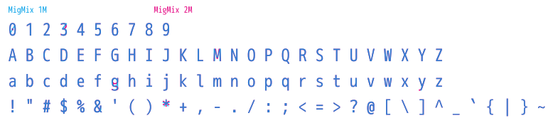
等幅英数字もほとんど同じです。 0 3 g y * の5文字だけ異なるようです。
MigMix 1P ⇔ 1M
1Pと1Mの違いは「可変幅（プロポーショナル）フォント」と「等幅（とうはば）フォント」の差です。
インストール
動作は、Windows 7,XP と Linux (Ubuntu 10.04)で確認しました。
ライセンス
このフォントは以下のライセンスに準じます。
- IPAフォント (IPA_Font_License_Agreement_v1.0.txt)
Copyright (C) 2002-2019 M+ FONTS PROJECT
Copyright(c) Information-technology Promotion Agency, Japan (IPA), 2003-2011.
このフォントをIPAフォントに置き換える場合は、 IPAフォントのダウンロードページで「IPAゴシック（Ver.003.03）」を 入手してください。 派生プログラム（MigMix/Miguフォント）を作成する過程でフォント開発プログラム（FontForge）によって作成された追加のファイルであって派生プログラムをさらに加工するにあたって利用できるファイル （*.sfdファイル）は、配布サイトから入手できます。
フォント名
フォント名について、以前は「M+とIPA Gothicを足した」という意味の M++IPAG を使っていました。
IPAフォント Ver3を使うようにしたところ、改変・再配布条件が変わってしまいフォント名に「IPA」を含む名称が禁止されたので、 M++IPAG は使えなくなりました。
そこで「M+ と IPA Gothic を mix したフォント」を略して MigMix としました。